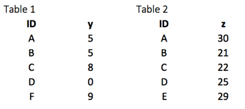
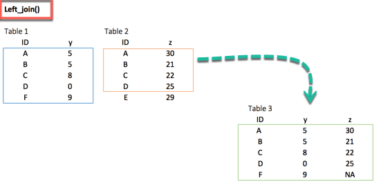
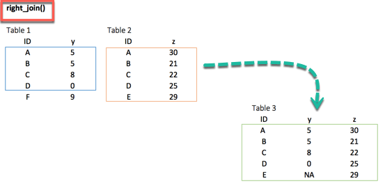
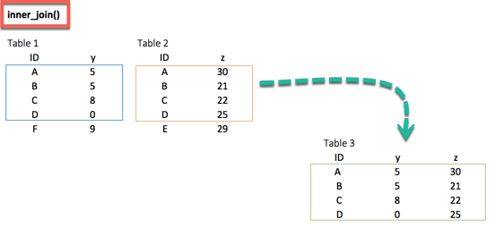
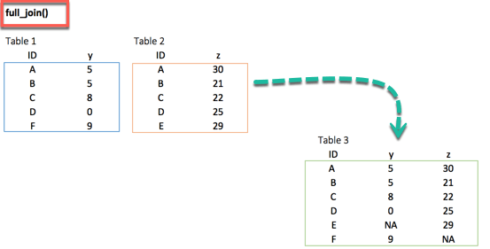
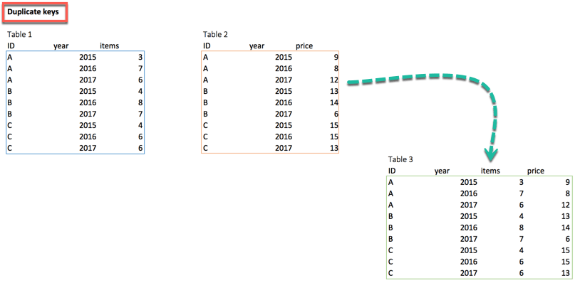
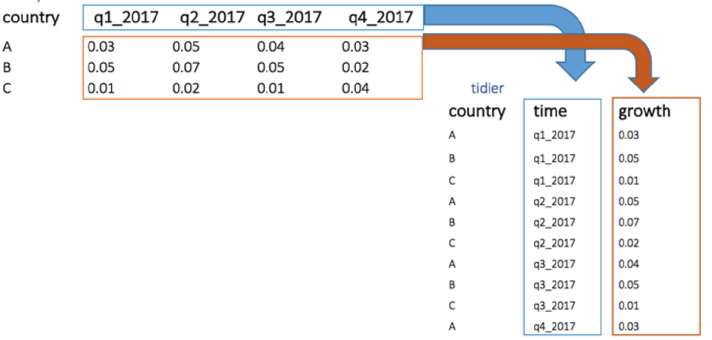

CrysDA


CrysDA is a Crystal shard for Data Analysis. Provides you modern functional-style API for data manipulation to filter, transform, aggregate and reshape tabular data. Core of the library is Crysda::DataFrame an immutable data structure interface.
CrysDA is heavily inspired by the amazing dplyr for R. CrysDA is written in pure Crystal and have no external dependencies. It is mimicking the API of dplyr, while carefully adding more typed constructs where possible.
Features
- [X] Filter, transform, aggregate and reshape tabular data
- [X] Modern, user-friendly and easy-to-learn data-science API
- [X] Reads from plain and compressed tsv, csv, json, or any delimited format with or without header from local or remote with auto inferring the types of data.
- [X] Supports reading data from DB
- [X] Supports grouped operations
- [X] Tables can contain atomic columns (Number, Float, Bool, String) as well as object columns
- [X] Reshape tables from wide to long and back
- [X] Table joins (left, right, semi, inner, outer)
- [X] Cross tabulation
- [X] Descriptive statistics (mean, min, max, median, ...)
- [X] Functional API inspired by dplyr, pandas
- [X] many more...
Quick glimpse and comparison with R/dplyr
flights = Crysda.read_csv("./spec/data/nycflights.tsv.gz", separator: '\t')
flights
.group_by("year", "month", "day")
.select(
Crysda.selector { |e| e["year".."day"] }, # columns range
Crysda.selector { |e| e.list_of("arr_delay", "dep_delay") })
.summarize(
"mean_arr_delay".with {|s| s["arr_delay"].mean(remove_na: true)},
"mean_dep_delay".with {|s| s["dep_delay"].mean(true)})
.filter {|f| (f["mean_arr_delay"] > 30) .or (f["mean_dep_delay"] > 30)}
.print("Flights mean delay of arrival and departure)output
Flights mean delay of arrival and departure: 49 x 5
year month day mean_arr_delay mean_dep_delay
1 2013 1 16 34.247 24.613
2 2013 1 31 32.603 28.658
3 2013 10 7 39.017 39.147
4 2013 10 11 18.923 31.232
5 2013 12 5 51.666 52.328
6 2013 12 8 36.912 21.515
7 2013 12 9 42.576 34.800
8 2013 12 10 44.509 26.465
9 2013 12 14 46.398 28.362
10 2013 12 17 55.872 40.706
and 39 more rowsAnd the same snippet written in dplyr
flights %>%
group_by(year, month, day) %>%
select(year:day, arr_delay, dep_delay) %>%
summarise(
mean_arr_delay = mean(arr_delay, na.rm = TRUE),
mean_dep_delay = mean(dep_delay, na.rm = TRUE)
) %>%
filter(mean_arr_delay > 30 | mean_dep_delay > 30)Tutorial - Short 1 minute Introduction
For this quick and short tutorial, we will be using ramen-ratings dataset from kaggle. You are free to use any of your choice.
# load dataset
df = Crysda.read_csv("./spec/data/ramen-ratings.csv")Shard provide support for loading data from CSV, TSV, JSON, DB, URL etc and auto infer the types of columns by peeking into data and make a best choice of data type. Once we’ve read the data into a DataFrame, we can start poking it to see what it looks like. A couple of things one typically look at first are the schema and a few rows.
df.print(max_rows: 5) # just show us first 5 rows of dataA DataFrame: 2580 x 7
Review # Brand Variety Style Country Stars Top Ten
1 2580 New Touch T's Restaurant Tantanmen Cup Japan 3.75
2 2579 Just Way Noodles Spicy Hot Sesame Spicy Hot Sesame Guan-miao Noodles Pack Taiwan 1
3 2578 Nissin Cup Noodles Chicken Vegetable Cup USA 2.25
4 2577 Wei Lih GGE Ramen Snack Tomato Flavor Pack Taiwan 2.75
5 2576 Ching's Secret Singapore Curry Pack India 3.75
and 2575 more rowsabove output shows that our dataset contains 2580 observations (rows) with 7 variables (or they are called columns here)
df.schema # show the structure of data.DataFrame with 2580 observations
Review # [Int32] 2580, 2579, 2578, 2577, 2576, 2575, 2574, 2573, 2572, 2571, 2570, 2569, 2568, 2567, 2566, 2565, 2564...
Brand [String] New Touch, Just Way, Nissin, Wei Lih, Ching's Secret, Samyang Foods, Acecook, Ikeda Shoku, Ripe'n'Dr...
Variety [String] T's Restaurant Tantanmen , Noodles Spicy Hot Sesame Spicy Hot Sesame Guan-miao Noodles, Cup Noodles ...
Style [String] Cup, Pack, Cup, Pack, Pack, Pack, Cup, Tray, Pack, Pack, Pack, Pack, Pack, Bowl, Pack, Cup, Pack, Pa...
Country [String] Japan, Taiwan, USA, Taiwan, India, South Korea, Japan, Japan, Japan, Singapore, Thailand, USA, South...
Stars [String] 3.75, 1, 2.25, 2.75, 3.75, 4.75, 4, 3.75, 0.25, 2.5, 5, 5, 4.25, 4.5, 5, 3.5, 3.75, 5, 4, 4, 4.25, 5...
Top Ten [String] , , , , , , , , , , , , , , , , , , , , , , , , , , , , , , , , , , , , , , , , , , , , , , , , , , ...Already at this point we can notice that for some reason, the ratings (Stars column) themselves inferred to be of String type. That might be due to some weirdness in the data itself. Exploring various datasets you’ll encounter all sorts of strange things. Some are easy to fix, like in this case. Let's try to see what is causing the problem
df.count("Stars").print(max_rows: 15)A DataFrame: 51 x 2
Stars n
1 3.75 350
2 1 26
3 2.25 21
4 2.75 85
5 4.75 64
6 4 384
7 0.25 11
8 2.5 67
9 5 369
10 4.25 143
11 4.5 132
12 3.5 326
13 Unrated 3
14 1.5 37
15 3.25 170
and 36 more rowsTurns out three records have a rating of “Unrated”, and since there are so few of them, it’s easier to just drop those records or we can reload the dataset and set the na_value argument to "Unrated", entries with this value will then be treated as nil. use this approach if you want to treat some values as nil, or you don't want to lose other columns values.
df = Crysda.read_csv("./spec/data/ramen-ratings.csv", na_value: "Unrated") # this will retain all rows, while column values with "Unrated" will be treated as `nil`But in this tutorial we are just going to drop those 3 rows and addd new column to dataframe loaded in above step.
new_df = df.filter { |f| f["Stars"].matching { |s| !s.starts_with?("Un") } }
.add_column("Stars_New") { |c| c["Stars"].map { |m| m.to_s.to_f } }.tap(&.schema)DataFrame with 2577 observations
Review # [Int32] 2580, 2579, 2578, 2577, 2576, 2575, 2574, 2573, 2572, 2571, 2570, 2569, 2568, 2567, 2566, 2565, 2564...
Brand [String] New Touch, Just Way, Nissin, Wei Lih, Ching's Secret, Samyang Foods, Acecook, Ikeda Shoku, Ripe'n'Dr...
Variety [String] T's Restaurant Tantanmen , Noodles Spicy Hot Sesame Spicy Hot Sesame Guan-miao Noodles, Cup Noodles ...
Style [String] Cup, Pack, Cup, Pack, Pack, Pack, Cup, Tray, Pack, Pack, Pack, Pack, Pack, Bowl, Pack, Cup, Pack, Pa...
Country [String] Japan, Taiwan, USA, Taiwan, India, South Korea, Japan, Japan, Japan, Singapore, Thailand, USA, South...
Stars [String] 3.75, 1, 2.25, 2.75, 3.75, 4.75, 4, 3.75, 0.25, 2.5, 5, 5, 4.25, 4.5, 5, 3.5, 3.75, 5, 4, 4, 4.25, 5...
Top Ten [String] , , , , , , , , , , , , , , , , , , , , , , , , , , , , , , , , , , , , , , , , , , , , , , , , , , ...
Stars_New [Float64] 3.750, 1.000, 2.250, 2.750, 3.750, 4.750, 4.000, 3.750, 0.250, 2.500, 5.000, 5.000, 4.250, 4.500, 5....So we added a new column Stars_New and we can see that its now of Float64 type. We can perform simple statistics operations on this column now. Let's just calculate the average rating.
# we can either create summary dataframe
new_df.summarize("Average Rating".with {|c| c["Stars_New"].mean}).tap(&.print)
# or we can store the value to some local variable
puts new_df["Stars_New"].mean # => 3.654675979821498Of course, you can have questions to your data that can require some data manipulation, like grouping. For example, let’s find out how many unique Ramen brands are there per country.
brands_per_country = new_df
.group_by("Country")
.distinct("Brand")
.group_by("Country")
.count.tap(&.print)A DataFrame: 31 x 2
Country n
1 Japan 58
2 Taiwan 47
3 USA 44
4 India 7
5 South Korea 32
6 Singapore 5
7 Thailand 22
8 Hong Kong 9
9 Vietnam 14
10 Ghana 2
and 21 more rowsLet's sort the dataframe on unique brand count in descending order (with highest count on top)
brands_per_country.sort_desc_by("n").printA DataFrame: 31 x 2
Country n
1 Japan 58
2 Taiwan 47
3 USA 44
4 South Korea 32
5 Malaysia 28
6 China 22
7 Thailand 22
8 Indonesia 18
9 Vietnam 14
10 UK 11
and 21 more rowsThese were just a very few and basic examples to give you a taste of what you can do with Crysda. As every data wrangler’s path is different, I would encourage you to grab a dataset that interests you and explore it.
Tutorial 2 - Reshaping Data
Data analysis can be divided into three parts
- Extraction : First, we need to collect the data from many sources and combine them.
- Transform: This step involves the data manipulation. Once we have consolidated all the sources of data, we can begin to clean the data.
- Visualize: The last move is to visualize our data to check irregularity.
One of the most significant challenges faced by data scientist is the data manipulation. Data is never available in the desired format. The data scientist needs to spend at least half of his time, cleaning and manipulating the data. That is one of the most critical assignments in the job. If the data manipulation process is not complete, precise and rigorous, the model will not perform correctly.
Merging(joining) Data
CrysDA provides a nice and convenient way to combine datasets. We may have many sources of input data, and at some point, we need to combine them. A join with CrysDA adds variables to the right of the original dataset. The beauty is CrysDA is that it handles four types of joins similar to SQL
- Left join
- right join
- inner join
- outer join
We will study all the joins types via an easy example.
First of all, we build two datasets. Table 1 contains two variables, ID, and y, whereas Table 2 gathers ID and z. In each situation, we need to have a key-pair variable. In our case, ID is our key variable. The function will look for identical values in both tables and bind the returning values to the right of table 1. 
df_primary = Crysda.dataframe_of("ID","y").values(
"A", 5,
"B", 5,
"C", 8,
"D", 0,
"F", 9
)
df_secondary = Crysda.dataframe_of("ID","z").values(
"A", 30,
"B", 21,
"C", 22,
"D", 25,
"E", 29
)left_join()
The most common way to merge two datasets is to use the left_join function. We can see from the picture below that the key-pair matches perfectly the rows A, B, C and D from both datasets. However, E and F are left over. How do we treat these two observations? With the left_join, we will keep all the variables in the original table and don't consider the variables that do not have a key-paired in the destination table. In our example, the variable E does not exist in table 1. Therefore, the row will be dropped. The variable F comes from the origin table; it will be kept after the left_join and return NA in the column z. The figure below reproduces what will happen with a left_join.

df_primary.left_join(df_secondary, "ID").print("Left Join")Output:
Left Join: 5 x 3
ID y z
1 A 5 30
2 B 5 21
3 C 8 22
4 D 0 25
5 F 9 <NA>right_join()
The right_join function works exactly like left_join. The only difference is the row dropped. The value E, available in the destination data frame, exists in the new table and takes the value NA for the column y.

df_primary.right_join(df_secondary, "ID").print("Right Join")Output:
Right Join: 5 x 3
ID y z
1 A 5 30
2 B 5 21
3 C 8 22
4 D 0 25
5 E <NA> 29inner_join()
When we are 100% sure that the two datasets won't match, we can consider to return only rows existing in both dataset. This is possible when we need a clean dataset or when we don't want to impute missing values with the mean or median.
The inner_join comes to help. This function excludes the unmatched rows.

df_primary.inner_join(df_secondary, "ID").print("Inner Join")Output:
Inner Join: 4 x 3
ID y z
1 A 5 30
2 B 5 21
3 C 8 22
4 D 0 25outer_join()
Finally, the outer_join function keeps all observations and replace missing values with NA.

df_primary.outer_join(df_secondary, "ID").print("Outer Join")Output:
Outer Join: 6 x 3
ID y z
1 A 5 30
2 B 5 21
3 C 8 22
4 D 0 25
5 E <NA> 29
6 F 9 <NA>Multiple keys pairs
We can have multiple keys in our dataset. Consider the following dataset where we have a years or a list of products bought by the customer. 
df_primary = Crysda.dataframe_of("ID","year","items").values(
"A", 2015,3,
"A", 2016,7,
"A", 2017,6,
"B", 2015,4,
"B", 2016,8,
"B", 2017,7,
"C", 2015,4,
"C", 2016,6,
"C", 2017,6
)
df_secondary = Crysda.dataframe_of("ID","year","prices").values(
"A", 2015,9,
"A", 2016,8,
"A", 2017,12,
"B", 2015,13,
"B", 2016,14,
"B", 2017,6,
"C", 2015,15,
"C", 2016,15,
"C", 2017,13
)
df_primary.left_join(df_secondary, by: ["ID","year"]).print("Multikey Join")Output:
Multikey Join: 9 x 4
ID year items prices
1 A 2015 3 9
2 A 2016 7 8
3 A 2017 6 12
4 B 2015 4 13
5 B 2016 8 14
6 B 2017 7 6
7 C 2015 4 15
8 C 2016 6 15
9 C 2017 6 13Data Cleaning functions
Following are four important functions to tidy the data:
- gather: Transform the data from wide to long
- spread: Transform the data from long to wide
- separate: Split one variable into multiples
- unite: Unite multiple variables into one
gather()
The objectives of the gather function is to transform the data from wide to long.
Below we can visualize the concept of reshaping wide to long. We want to create a single column named growth, filled by the rows of the quarter variables. 
# Create a dataset
df = Crysda.dataframe_of("country", "q1_2017", "q2_2017", "q3_2017", "q4_2017").values(
"A", 0.03, 0.05, 0.04, 0.03,
"B", 0.05, 0.07, 0.05, 0.02,
"C", 0.01, 0.02, 0.01, 0.04)
df.printOutput:
A DataFrame: 3 x 5
country q1_2017 q2_2017 q3_2017 q4_2017
1 A 0.030 0.050 0.040 0.030
2 B 0.050 0.070 0.050 0.020
3 C 0.010 0.020 0.010 0.040Reshape the data
reshaped = df.gather("quarter","growth", Crysda.selector{|c| c["q1_2017".."q4_2017"]}).tap(&.print(max_rows: 12))Output:
A DataFrame: 12 x 3
country quarter growth
1 A q1_2017 0.030
2 B q1_2017 0.050
3 C q1_2017 0.010
4 A q2_2017 0.050
5 B q2_2017 0.070
6 C q2_2017 0.020
7 A q3_2017 0.040
8 B q3_2017 0.050
9 C q3_2017 0.010
10 A q4_2017 0.030
11 B q4_2017 0.020
12 C q4_2017 0.040In the gather function, we created two new variables qurater and growth because our original dataset has one group variable: country and the key-value pairs.
spread()
The spread function does the opposite of gather. We can reshape data in above example back to its original form.
reshaped.spread("quarter","growth").printOutput:
A DataFrame: 3 x 5
country q1_2017 q2_2017 q3_2017 q4_2017
1 A 0.030 0.050 0.040 0.030
2 B 0.050 0.070 0.050 0.020
3 C 0.010 0.020 0.010 0.040separate()
The separate function splits a column into multiples according to a separator. This function is helpful in some situations where the variable is a list of values seprated by a separator. For example, our analysis require focusing on month and year and we want to separate the column into two new variables.
reshaped.separate("quarter", into: ["Qtr","Year"], sep: "_").print("Separated", max_rows: 12)Output:
Separated: 12 x 4
country growth Qtr Year
1 A 0.030 q1 2017
2 B 0.050 q1 2017
3 C 0.010 q1 2017
4 A 0.050 q2 2017
5 B 0.070 q2 2017
6 C 0.020 q2 2017
7 A 0.040 q3 2017
8 B 0.050 q3 2017
9 C 0.010 q3 2017
10 A 0.030 q4 2017
11 B 0.020 q4 2017
12 C 0.040 q4 2017unite()
The unite function concatenate multiple columns into one.
separated.unite("Quarter",["Qtr","Year"], sep: "_").print("United")Output:
country growth Quarter
1 A 0.030 q1_2017
2 B 0.050 q1_2017
3 C 0.010 q1_2017
4 A 0.050 q2_2017
5 B 0.070 q2_2017
6 C 0.020 q2_2017
7 A 0.040 q3_2017
8 B 0.050 q3_2017
9 C 0.010 q3_2017
10 A 0.030 q4_2017
and 2 more rowsInstallation
- Add the dependency to your
shard.yml:
dependencies:
crysda:
github: naqvis/CrysDA- Run
shards install
Usage
require "crysda"
# Read tab-delimited data-frame from disk
df = Crysda.read_csv("data/iris.txt", separator: '\t')
# Read data-frame from URL
df = Crysda.read_csv("http://url/file.csv")
# Create data-frame in memory
df = Crysda.dataframe_of("first_name", "last_name", "age", "weight", "adult").values(
"Max", "Doe", 23, 55.8, true,
"Franz", "Smith", 23, 88.3, true,
"Horst", "Keanes", 12, 82.5, false,
)
# print rows
df.print
# print structure of data-frame
df.schema
# Subset columns with select/reject
df.select("last_name", "weight")
df.reject("weight", "age")
df.select(&.ends_with?("name"))
df.select? { |v| v.is_a?(Crysda::Int32Col) }
df.select? { |v| v.name.starts_with?("foo") }
# Subset rows with filter
df.filter { |e| e.["age"] == 23 }
df.filter { |e| e.["weight"] > 50 }
df.filter { |e| e["first_name"].matching { |e| e.starts_with?("Ho") } }
# Sort your data
df.sort_by("age")
# and add secondary sorting attribute as variadic param
df.sort_by("age", "weight")
# sort in descending order
df.sort_desc_by("age")
df.sort_by { |e| e["weight"] }
# add columns with mutate
# by adding constant values as new column
df.add_column("salary_category") { 3 }
# by doing basic column arithmetics
df.add_column("age_3y_later") { |e| e["age"] + 3 }
# Note: dataframes are immutable so we need to (re)assign results to preserve changes.
new_df = df.add_column("full_name") { |e| e["first_name"] + " " + e["last_name"] }
# Also feel free to mix types
df.add_column("user_id") { |e| e["last_name"] + "_id" + e.row_num }
# add multiple columns at once
df.add_columns(
"age_plus3".with { |e| e["age"] + 3 },
"initials".with { |e| e["first_name"].map(&.to_s[0]).concatenate(e["last_name"].map(&.to_s[0])) })
# Summarize
# do simple cross tabulations
df.count("age", "last_name")
# or calculate single summary statistic
df.summarize("min_age") { |e| e["age"].min }
# or
df.summarize(
"min_age".with { |e| e["age"].min },
"max_age".with { |e| e["age"].max },
"mean_weight".with { |e| e["weight"].mean },
)
# Group operations
grouped_df = df.group_by("age") # or provide multiple grouping attributes
grouped_df.summarize(
"mean_weight".with { |e| e["weight"].mean(remove_na: true) },
"num_persons".with {|e| e.num_row}
)
# optionally ungroup the data
grouped_df.ungroup.print
# Join operations
a = Crysda.dataframe_of("name", "project_id").values(
"Max", "P1",
"Max", "P2",
"Tom", "P3"
)
b = Crysda.dataframe_of("title", "project_id").values(
"foo", "P1",
"some_title", "P2",
"alt_title", "P2"
)
a.left_join(b, by: "project_id").print
a.outer_join(b).print
df = Crysda.dataframe_of("foo", "bar").values(
"a", 2,
"b", 3,
"c", 4
)
# join on foo
df.inner_join(df, by: "foo", suffices: {"_1", "_2"}).tap do |d|
d.print
end
# again but now join on bar. Join columns are expected to come first
df.inner_join(df, "bar", {"_1", "_2"})
# again but now join on nothing
df.inner_join(df, [] of String, {"_1", "_2"})
# Reshape data
df = Crysda.dataframe_of("person", "year", "weight", "sex").values(
"max", 2014, 33.1, "M",
"max", 2015, 32.3, "M",
"max", 2016, nil, "M",
"anna", 2013, 33.5, "F",
"anna", 2014, 37.3, "F",
"anna", 2015, 39.2, "F",
"anna", 2016, 39.9, "F"
)
df.schema
df.spread("year", "weight").print
df = Crysda.dataframe_of("person", "property", "value", "sex").values(
"max", "salary", "33.1", "M",
"max", "city", "London", "M",
"anna", "salary", "33.5", "F",
"anna", "city", "Berlin", "F"
)
wide_df = df.spread("property", "value")
wide_df.gather("property", "value", Crysda::ColumnSelector.new { |x| (x.except("person")).and x.starts_with?("person") })
wide_df.gather("property", "value", Crysda::ColumnSelector.new { |x| x.except("person") })
wide_df.gather("property", "value", Crysda::ColumnSelector.new { |x| x.except("person") })
.tap do |wf|
wf.print
annual_salary = wf.filter { |x| (x["person"] == "anna").and (x["property"] == "salary") }
annual_salary.print
end.....
Unable to cover each and every functionality in this README. So refer to specs for more sample usages and API documentation for all available functionality.
Development
To run all tests:
crystal specContributing
- Fork it (<https://github.com/naqvis/Crysda/fork>)
- Create your feature branch (
git checkout -b my-new-feature) - Commit your changes (
git commit -am 'Add some feature') - Push to the branch (
git push origin my-new-feature) - Create a new Pull Request
Contributors
- Ali Naqvi - creator and maintainer